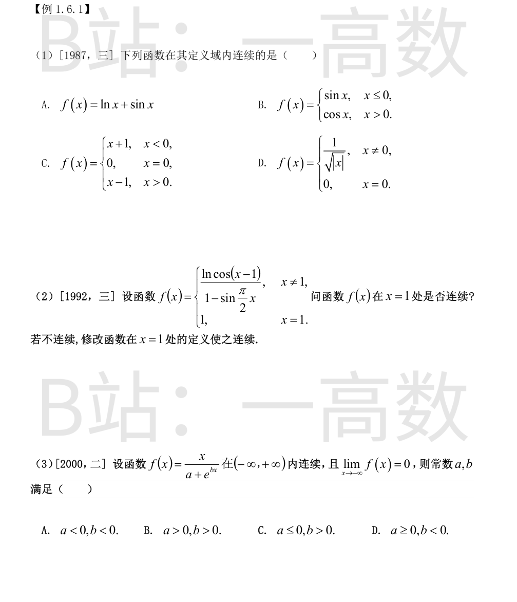
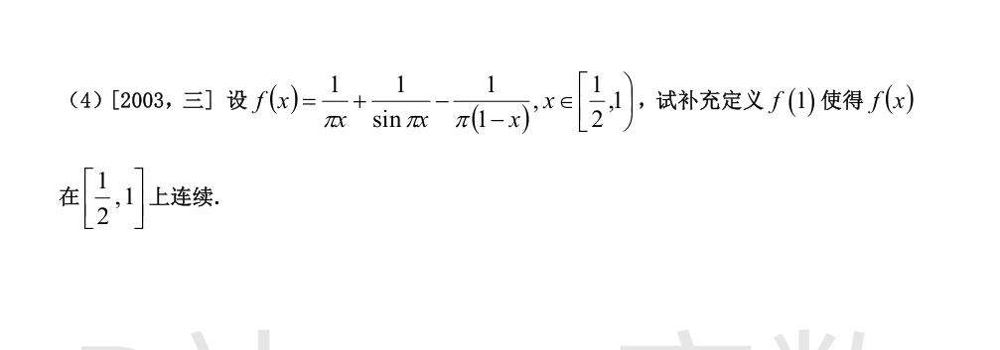
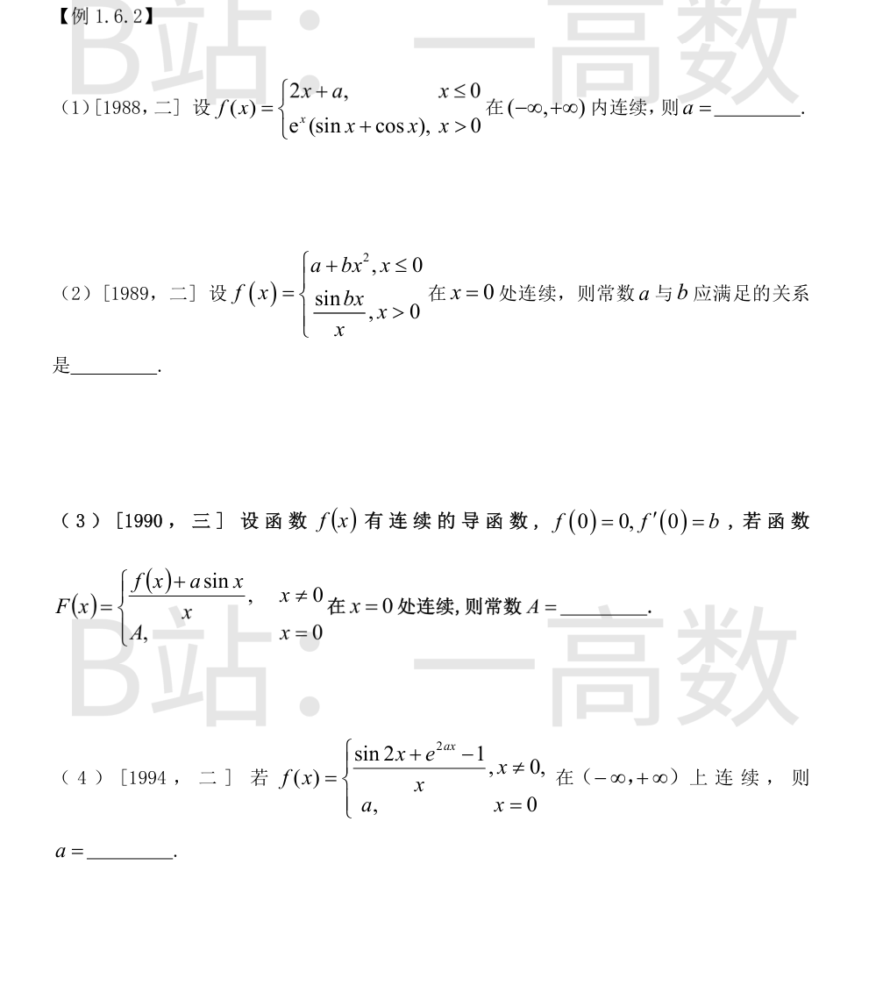
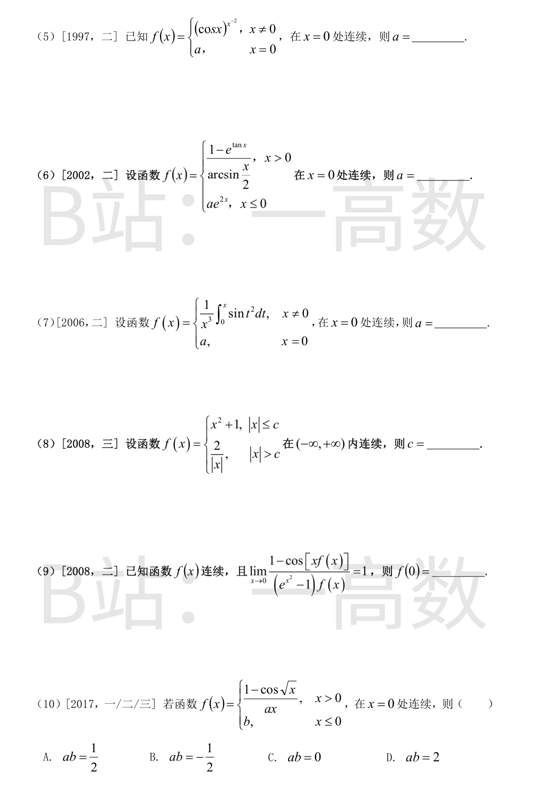
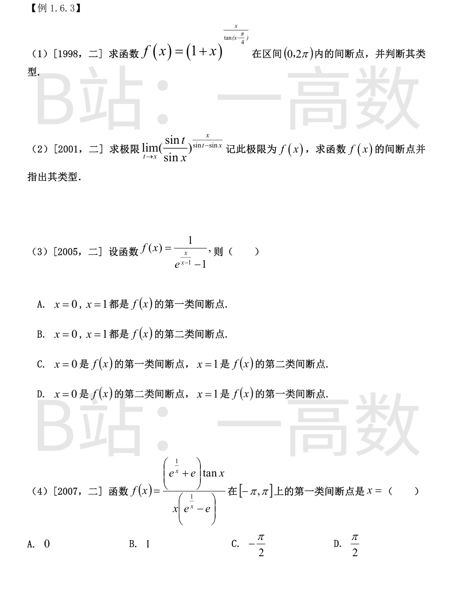
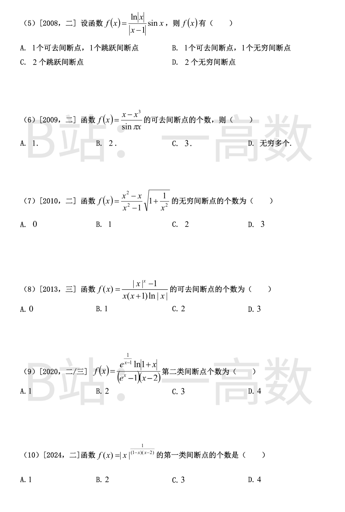
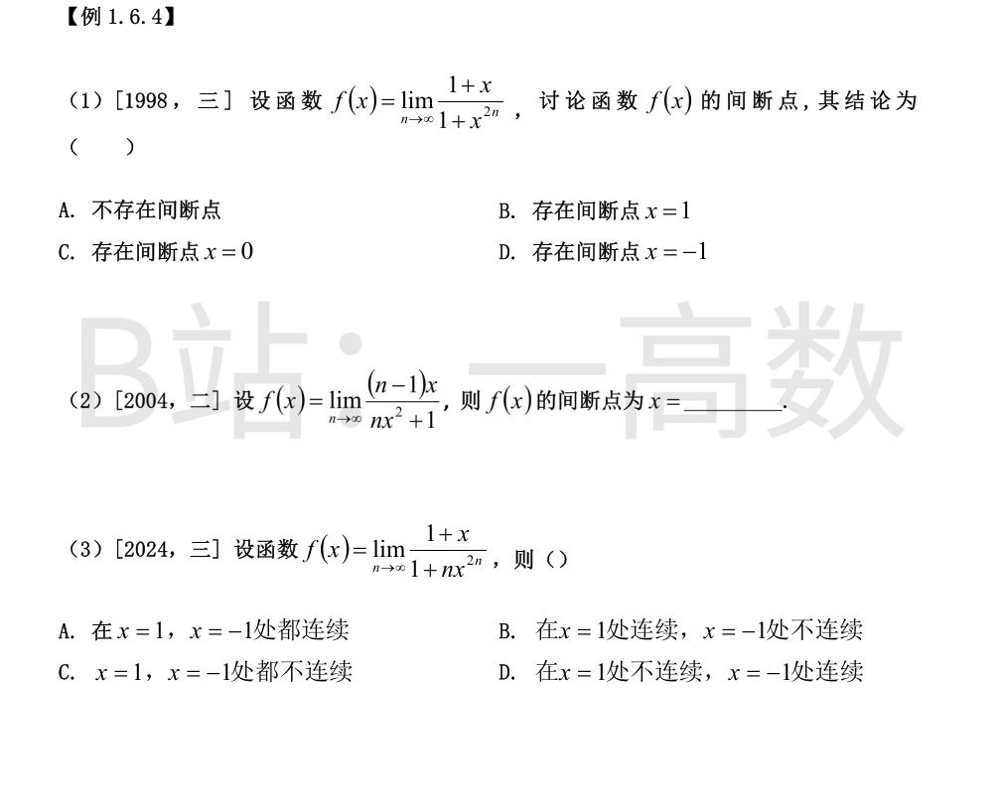
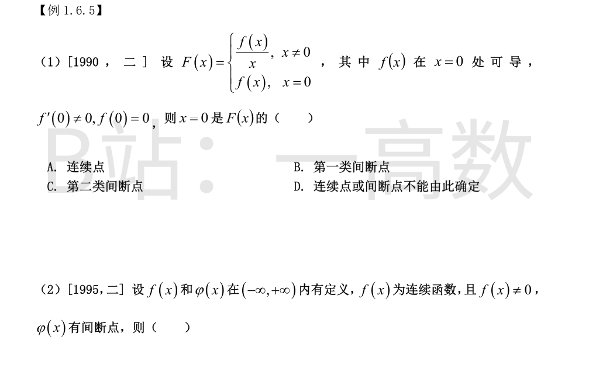

逐项检查定义域内（尤其分段点与定义边缘）的连续性。
A：定义域为 $(0,+\infty)$，$\ln x$ 与 $\sin x$ 在其上均连续，故和函数在其定义域内连续。
B：$f(0)=\sin 0=0$，而 $\lim_{x\to 0^+}\cos x=1\neq 0$，且 $0$ 在定义域内，故 $x=0$ 为跳跃间断点。
C：$\lim_{x\to 0^-}(x+1)=1$，$\lim_{x\to 0^+}(x-1)=-1$，$f(0)=0$，左右极限均存在但不等于 $f(0)$，$x=0$ 为跳跃间断点。
D：$\lim_{x\to 0}\dfrac{1}{\sqrt{|x|}}=+\infty\neq f(0)=0$，$x=0$ 为无穷（第二类）间断点。
只有 A 在其定义域内连续，选 A。
令 $u=x-1\to 0$，此为 $\dfrac{0}{0}$ 型。
分子：由 $\cos u=1-\dfrac{u^2}{2}+o(u^2)$ 及 $\ln(1+t)\sim t$ 得
$$\ln\cos u\sim -\frac{u^2}{2}.$$
分母：$\sin\dfrac{\pi x}{2}=\sin\Big(\dfrac{\pi}{2}+\dfrac{\pi u}{2}\Big)=\cos\dfrac{\pi u}{2}=1-\dfrac{1}{2}\Big(\dfrac{\pi u}{2}\Big)^2+o(u^2)$，故
$$1-\sin\frac{\pi x}{2}\sim \frac{\pi^2 u^2}{8}.$$
于是
$$\lim_{x\to 1}f(x)=\lim_{u\to 0}\frac{-u^2/2}{\pi^2u^2/8}=-\frac{4}{\pi^2}\neq f(1)=1,$$
所以 $f$ 在 $x=1$ 不连续，$x=1$ 为可去间断点。修改定义为 $f(1)=-\dfrac{4}{\pi^2}$，则 $f$ 在 $x=1$ 连续。
（1）连续性要求：$a+e^{bx}$ 对一切 $x$ 无零点。当 $b\neq 0$ 时 $e^{bx}$ 取遍 $(0,+\infty)$，若 $a<0$ 则必有 $e^{bx}=-a$ 的根使分母为零，故须 $a\ge 0$。若 $b=0$，则 $f(x)=\dfrac{x}{a+1}$，$x\to-\infty$ 时极限不为 0（$a\neq-1$）或无意义（$a=-1$），故 $b\neq 0$。
（2）极限条件 $\lim_{x\to-\infty}\dfrac{x}{a+e^{bx}}=0$：
- 若 $b>0$：$x\to-\infty$ 时 $e^{bx}\to 0$，则 $f(x)\sim\dfrac{x}{a}\to-\infty\neq 0$，舍去；
- 若 $b<0$：$x\to-\infty$ 时 $bx\to+\infty$，$e^{bx}\to+\infty$，指数增长压倒线性增长，$\lim_{x\to-\infty}\dfrac{x}{a+e^{bx}}=0$，满足。
综上 $a\ge 0$ 且 $b<0$，选 D。
$x\to 1^-$ 时 $\sin\pi x=\sin\big(\pi-\pi x\big)=\sin\big(\pi(1-x)\big)\sim \pi(1-x)$，故 $\dfrac{1}{\sin\pi x}$ 与 $-\dfrac{1}{\pi(1-x)}$ 的奇异性相抵消。先合并前两项与后一项：
$$f(x)=\frac{1}{\pi x}-\frac{1}{\pi(1-x)}+\frac{1}{\sin\pi x}=\frac{(1-x)-x}{\pi x(1-x)}+\frac{1}{\sin\pi x}=\frac{1-2x}{\pi x(1-x)}+\frac{1}{\sin\pi x}.$$
代入 $\dfrac{1}{\sin\pi x}\sim\dfrac{1}{\pi(1-x)}$：
$$\lim_{x\to 1^-}f(x)=\lim_{x\to 1^-}\left[\frac{1-2x}{\pi x(1-x)}+\frac{1}{\pi(1-x)}\right]=\lim_{x\to 1^-}\frac{1}{\pi(1-x)}\left[\frac{1-2x}{x}+1\right]=\lim_{x\to 1^-}\frac{1}{\pi(1-x)}\cdot\frac{1-x}{x}=\lim_{x\to 1^-}\frac{1}{\pi x}=\frac{1}{\pi}.$$
故补充定义 $f(1)=\dfrac{1}{\pi}$ 后 $f$ 在 $\left[\dfrac12,1\right]$ 上连续。


在 $x=0$ 处：左极限与函数值 $f(0)=2\cdot 0+a=a$；右极限 $\lim_{x\to 0^+}e^{x}(\sin x+\cos x)=e^{0}(0+1)=1$。
连续要求 $f(0^-)=f(0^+)$，即 $a=1$。
$f(0)=a+0=a$；$\lim_{x\to 0^+}\dfrac{\sin bx}{x}=\dfrac{\sin bx}{bx}\cdot b=b$。
在 $x=0$ 连续要求左右极限等于函数值，故 $a=b$。
$x=0$ 处连续要求 $A=\lim_{x\to 0}\dfrac{f(x)+a\sin x}{x}$。
$$\lim_{x\to 0}\frac{f(x)+a\sin x}{x}=\lim_{x\to 0}\frac{f(x)-f(0)}{x}+a\lim_{x\to 0}\frac{\sin x}{x}=f'(0)+a=b+a.$$
（其中 $\lim_{x\to0}\dfrac{f(x)-f(0)}{x}=f'(0)=b$ 用到 $f(0)=0$。）故 $A=a+b$。
$$\lim_{x\to 0}f(x)=\lim_{x\to 0}\left(\frac{\sin 2x}{x}+\frac{e^{2ax}-1}{x}\right)=2+\lim_{x\to 0}\frac{2ax}{x}=2+2a.$$
在 $x=0$ 连续要求 $a=2+2a$，解得 $a=-2$。
$$\lim_{x\to 0}(\cos x)^{1/x^2}=\exp\left(\lim_{x\to 0}\frac{\ln\cos x}{x^2}\right).$$
由泰勒展开 $\ln\cos x=-\dfrac{x^2}{2}+o(x^2)$，得 $\dfrac{\ln\cos x}{x^2}\to -\dfrac12$（亦可用洛必达：$\dfrac{-\tan x}{2x}\to-\dfrac12$）。
故极限为 $e^{-1/2}$，连续要求 $a=e^{-1/2}=\dfrac{1}{\sqrt e}$。
右极限：$x\to 0^+$ 时 $1-e^{\tan x}\sim -\tan x\sim -x$，$\arcsin\dfrac{x}{2}\sim \dfrac{x}{2}$，故
$$\lim_{x\to 0^+}f(x)=\frac{-x}{x/2}=-2.$$
左极限与函数值：$f(0)=ae^{0}=a$。
连续要求 $a=-2$。
洛必达法则（$\frac00$ 型）：
$$\lim_{x\to 0}\frac{\int_0^x\sin t^2\,dt}{x^3}=\lim_{x\to 0}\frac{\sin x^2}{3x^2}=\lim_{x\to 0}\frac{x^2}{3x^2}=\frac13.$$
（或用 $\sin t^2\sim t^2$ 得 $\int_0^x\sin t^2 dt\sim\int_0^x t^2dt=\dfrac{x^3}{3}$。）故 $a=\dfrac13$。
两段在各自区域内均连续，只须在分段点 $x=\pm c$（$c\ge 0$）连续。
在 $x=c$ 处：$c^2+1=\dfrac{2}{c}$，即 $c^3+c-2=0$。因式分解 $c^3+c-2=(c-1)(c^2+c+2)=0$，其中 $c^2+c+2>0$ 恒成立，故唯一实根 $c=1$。
在 $x=-c$ 处条件相同（$|-c|=c$），自动满足。故 $c=1$。
$f$ 在 $0$ 连续，故 $x\to 0$ 时 $xf(x)\to 0$，可用等价无穷小：$1-\cos[xf(x)]\sim\dfrac{x^2f^2(x)}{2}$；又 $e^{x^2}-1\sim x^2$。
代入：
$$\lim_{x\to 0}\frac{\frac{1}{2}x^2f^2(x)}{x^2f(x)}=\lim_{x\to 0}\frac{f(x)}{2}=\frac{f(0)}{2}=1,$$
故 $f(0)=2$。
$x\to 0^+$：$1-\cos\sqrt{x}\sim\dfrac{(\sqrt x)^2}{2}=\dfrac{x}{2}$，故右极限
$$\lim_{x\to 0^+}\frac{1-\cos\sqrt x}{ax}=\frac{x/2}{ax}=\frac{1}{2a}.$$
左极限与函数值 $f(0)=b$。
连续要求 $b=\dfrac{1}{2a}$，即 $ab=\dfrac12$，选 A。


$$f(x)=(1+x)^{\frac{x}{\tan(x-\pi/4)}}=\exp\left(\frac{x\ln(1+x)}{\tan(x-\pi/4)}\right),$$
在 $(0,2\pi)$ 内 $1+x>0$，可疑点为 $\tan(x-\pi/4)$ 为零或不存在的点：$x-\dfrac{\pi}{4}\in\Big\{0,\dfrac{\pi}{2},\pi,\dfrac{3\pi}{2}\Big\}$，即 $x=\dfrac{\pi}{4},\dfrac{3\pi}{4},\dfrac{5\pi}{4},\dfrac{7\pi}{4}$。
（1）$x=\dfrac{\pi}{4}$ 与 $x=\dfrac{5\pi}{4}$：$\tan(x-\dfrac{\pi}{4})\to 0$，而分子 $x\ln(1+x)\to$ 非零常数（$x>0$），故指数 $\to\pm\infty$：左侧 $\tan<0$ 时 $f\to 0$，右侧 $f\to+\infty$。$f$ 无界，为第二类（无穷）间断点。
（2）$x=\dfrac{3\pi}{4}$ 与 $x=\dfrac{7\pi}{4}$：$\tan(x-\dfrac{\pi}{4})\to\pm\infty$，分子趋于有限常数，故指数 $\to 0$，$\lim f(x)=e^{0}=1$ 存在（$f$ 在该点无定义）。为第一类（可去）间断点。
先求极限（$1^\infty$ 型，$t\to x$，$\sin x\neq 0$）：
$$\ln f(x)=\lim_{t\to x}\frac{x\ln\dfrac{\sin t}{\sin x}}{\sin t-\sin x}.$$
$t\to x$ 时 $\dfrac{\sin t}{\sin x}\to 1$，故 $\ln\dfrac{\sin t}{\sin x}\sim\dfrac{\sin t-\sin x}{\sin x}$，于是
$$\ln f(x)=\lim_{t\to x}x\cdot\frac{\sin t-\sin x}{\sin x}\cdot\frac{1}{\sin t-\sin x}=\frac{x}{\sin x},$$
即 $f(x)=e^{x/\sin x}$，定义域为 $\sin x\neq 0$，即 $x\neq k\pi$。
（1）$x=0$：$\lim_{x\to 0}\dfrac{x}{\sin x}=1$，故 $\lim_{x\to0}f(x)=e$ 存在，$x=0$ 为可去间断点（第一类）。
（2）$x=k\pi\ (k=\pm1,\pm2,\dots)$：$x\to k\pi$ 时 $\dfrac{x}{\sin x}\to\pm\infty$（单侧异号），$f$ 在一侧 $\to+\infty$，极限不存在且无界，为第二类（无穷）间断点。
可疑点：$x=0$（指数 $\to 0$ 使分母 $\to 0$）与 $x=1$（指数 $\to\infty$）。
（1）$x=0$：$\dfrac{x}{x-1}\to 0$，故 $e^{x/(x-1)}-1\sim\dfrac{x}{x-1}\sim -x$。$x\to 0^+$ 时 $f\to\dfrac{1}{-x}\to-\infty$；$x\to 0^-$ 时 $f\to+\infty$。$\lim_{x\to0}f=\infty$，$x=0$ 为第二类（无穷）间断点。
（2）$x=1$：$x\to 1^+$ 时 $\dfrac{x}{x-1}\to+\infty$，$e^{x/(x-1)}\to+\infty$，$f\to 0^+$；$x\to 1^-$ 时 $\dfrac{x}{x-1}\to-\infty$，$e^{x/(x-1)}\to 0$，$f\to\dfrac{1}{0-1}=-1$。左右极限都存在但不相等，$x=1$ 为第一类（跳跃）间断点。
故选 D。
可疑点：$x=0$（$e^{1/x}$）、$x=1$（$e^{1/x}=e$ 使分母为零）、$x=\pm\dfrac{\pi}{2}$（$\tan x$ 无定义）。
（1）$x=0$：$x\to 0^-$ 时 $e^{1/x}\to 0$，$f\sim\dfrac{e\tan x}{x\cdot(0-e)}\to-\dfrac{\tan x}{x}\to-1$；$x\to 0^+$ 时 $e^{1/x}\to+\infty$，$f\sim\dfrac{\tan x}{x}\to 1$。左右极限存在但不相等，为跳跃间断点（第一类）。
（2）$x=1$：分子 $(e+1)\tan 1\neq 0$，分母 $\to 0$，$f\to\infty$，第二类。
（3）$x=\pm\dfrac{\pi}{2}$：$\tan x\to\pm\infty$，分母非零有限，$f\to\infty$，第二类。
故第一类间断点只有 $x=0$，选 A。
可疑点：$x=0$（$\ln|x|$）、$x=1$（分母为零）。
（1）$x=0$：$f$ 无定义。$x\to 0$ 时 $|x-1|\to 1$，$\sin x\sim x$，故
$$\lim_{x\to 0}f(x)=\lim_{x\to 0}x\ln|x|=0$$
（$x\ln x\to 0$），极限存在，$x=0$ 为可去间断点。
（2）$x=1$：$f$ 无定义。$\ln|x|=\ln\big(1+(x-1)\big)\sim x-1$，故 $\dfrac{\ln|x|}{|x-1|}=\dfrac{x-1}{|x-1|}\to 1$（右）、$-1$（左），从而 $f\to\sin 1$（右）、$-\sin 1$（左）。左右极限存在但不相等，$x=1$ 为跳跃间断点。
即 1 个可去间断点与 1 个跳跃间断点，选 A。
$\sin\pi x=0$ 于一切整数 $x=n$，且 $x-x^3=x(1-x)(1+x)$ 仅在 $x=-1,0,1$ 处为零。
（1）整数 $n\notin\{-1,0,1\}$：$\lim\dfrac{x-x^3}{\sin\pi x}=\infty$（分子不为零），为无穷间断点，非可去。
（2）$x\to 0$：$x-x^3\sim x$，$\sin\pi x\sim\pi x$，极限 $=\dfrac{1}{\pi}$，可去。
（3）$x\to 1$：$x-x^3=x(1-x)(1+x)\sim 2(1-x)$；$\sin\pi x=\sin\big(\pi(1-x)\big)\sim\pi(1-x)$；极限 $=\dfrac{2}{\pi}$，可去。
（4）$x\to -1$：$x-x^3\sim(-1)\cdot 2\cdot(1+x)=-2(1+x)$；$\sin\pi x=\sin\big(\pi(x+1)-\pi\big)=-\sin\big(\pi(x+1)\big)\sim-\pi(1+x)$；极限 $=\dfrac{-2}{-\pi}=\dfrac{2}{\pi}$，可去。
共 3 个可去间断点，选 C。
$\dfrac{x^2-x}{x^2-1}=\dfrac{x(x-1)}{(x-1)(x+1)}=\dfrac{x}{x+1}\ (x\neq 1)$，且 $\sqrt{1+\dfrac{1}{x^2}}=\dfrac{\sqrt{x^2+1}}{|x|}$。可疑点 $x=0,\pm 1$。
（1）$x=0$：$f=\dfrac{x}{|x|}\cdot\dfrac{\sqrt{x^2+1}}{x+1}$，右极限 $\to 1$，左极限 $\to -1$，为跳跃间断点（第一类），不是无穷间断点。
（2）$x=1$：$\lim f=\dfrac{1}{2}\cdot\sqrt 2=\dfrac{\sqrt2}{2}$ 存在（$f$ 无定义），可去间断点。
（3）$x=-1$：$\dfrac{x}{x+1}\to\pm\infty$，而 $\sqrt{1+\dfrac1{x^2}}\to\sqrt2$，故 $f\to\pm\infty$，为无穷间断点。
无穷间断点仅 $x=-1$ 一个，选 B。
$|x|^x=e^{x\ln|x|}$，$f(x)=\dfrac{e^{x\ln|x|}-1}{x(x+1)\ln|x|}$。可疑点：$x=0$（$\ln|x|$ 无定义）、$x=\pm1$（$\ln|x|=0$）。
（1）$x=0$：$x\ln|x|\to 0$，故分子 $e^{x\ln|x|}-1\sim x\ln|x|$；分母 $x(x+1)\ln|x|\sim x\ln|x|$。极限 $=1$，可去。
（2）$x=1$：$\ln|x|=\ln x\sim x-1$，$x\ln|x|\sim(x-1)$；分子 $\sim x-1$，分母 $\sim 1\cdot 2\cdot(x-1)$。极限 $=\dfrac12$，可去。
（3）$x=-1$：令 $u=x+1\to 0$，$\ln|x|=\ln(1-u)\sim -u$，$x\ln|x|\sim(-1)(-u)=u$，分子 $\sim u$；分母 $=x(x+1)\ln|x|\sim(-1)\cdot u\cdot(-u)=u^2$。$f\sim\dfrac{u}{u^2}=\dfrac{1}{u}\to\infty$，为无穷间断点，非可去。
可去间断点 2 个（$x=0,1$），选 C。
可疑点：$x=0$（$e^x-1=0$）、$x=1$（$e^{1/(x-1)}$）、$x=-1$（$\ln(1+x)$）、$x=2$（因子 $x-2$）。
（1）$x=0$：$e^{1/(x-1)}\to e^{-1}$，$\ln(1+x)\sim x$，分母 $(e^x-1)(x-2)\sim x\cdot(-2)$。极限 $=\dfrac{e^{-1}x}{-2x}=-\dfrac{1}{2e}$ 存在，为可去间断点（第一类）。
（2）$x=1$：$x\to 1^-$ 时 $e^{1/(x-1)}\to 0$，$f\to 0$；$x\to 1^+$ 时 $e^{1/(x-1)}\to+\infty$，分子 $\to+\infty$（$\ln 2>0$），分母 $\to(e-1)(-1)<0$，$f\to-\infty$。第二类（无穷）。
（3）$x=2$：分母 $\to 0$，分子 $e^{1}\ln 3\neq 0$，$f\to\pm\infty$。第二类。
（4）$x=-1$：$\ln(1+x)\to-\infty$，其余因子趋于非零有限值（$e^{-1/2}\cdot(e^{-1}-1)\cdot(-3)\neq 0$），$f\to\infty$。第二类。
第二类间断点共 3 个（$x=-1,1,2$），选 C。
$f(x)=e^{\frac{\ln|x|}{|1-x|\,|x-2|}}$，无定义点为 $x=0$（底数取对数）与 $x=1,2$（指数分母为零）。
（1）$x=0$：$\dfrac{\ln|x|}{|1-x||x-2|}\to\dfrac{-\infty}{1\cdot 2}=-\infty$，故 $\lim_{x\to 0}f(x)=0$ 存在，而 $f$ 在 $x=0$ 无定义，为可去间断点（第一类）。
（2）$x=1$：令 $h=x-1\to 0$，$\ln|x|=\ln(1+h)\sim h$，$|1-x|=|h|$，$|x-2|\to 1$，故 $\ln f\sim\dfrac{h}{|h|}$：左极限 $\ln f\to-1$，$f\to e^{-1}$；右极限 $\ln f\to 1$，$f\to e$。左右极限存在不相等，为跳跃间断点（第一类）。
（3）$x=2$：$\ln f=\dfrac{\ln|x|}{|1-x||x-2|}\sim\dfrac{\ln 2}{|x-2|}\to+\infty$，$f\to+\infty$，为第二类（无穷）间断点。
第一类间断点共 2 个，选 B。
注：幂指函数按 $|x|^u=e^{u\ln|x|}$ 理解时 $x=0$ 处无定义、为可去间断点；若另行规定 $f(0)=0$ 则 $x=0$ 连续、第一类仅 1 个。按真题标准口径取 B。
【仲裁修正】独立校验发现分歧，经仲裁重解，以本答案为准：原题印刷为 f(x)=|x|^{1/((1-x)(x-2))}，指数分母无绝对值（书页原图核实）；解题代理误读为 |1-x||x-2| 才得 B。按原题：x=0 处指数 ln|x|/((1-x)(x-2))→(-∞)/(-2)=+∞，f→+∞（第二类）；x=1 处比值→1，f→e（可去）；x=2 处指数→±∞（第二类）。第一类共 1 个，选 A（A、B 正确）

由 $|x|<1$ 时 $x^{2n}\to 0$，$|x|=1$ 时 $x^{2n}=1$，$|x|>1$ 时 $x^{2n}\to+\infty$，得
$$f(x)=\begin{cases}1+x, & |x|<1\\ \dfrac{1+x}{2}, & |x|=1\\ 0, & |x|>1\end{cases}$$
（1）$x=1$：$f(1)=1$；左极限 $\lim_{x\to 1^-}(1+x)=2$，右极限 $0$。左右极限存在但不相等（也不等于 $f(1)$），$x=1$ 为跳跃间断点。
（2）$x=-1$：$f(-1)=0$；左极限（$|x|>1$ 侧）$=0$，右极限 $\lim_{x\to -1^+}(1+x)=0$，三值相等，$f$ 在 $x=-1$ 连续。
（3）其余点均为初等函数拼接，连续。
故存在间断点 $x=1$，选 B。
分子分母同除以 $n$：
- $x\neq 0$ 时：$f(x)=\lim_{n\to\infty}\dfrac{(1-\frac1n)x}{x^2+\frac1n}=\dfrac{x}{x^2}=\dfrac1x$；
- $x=0$ 时：$f(0)=\lim_{n\to\infty}\dfrac{0}{1}=0$。
故 $f(x)=\begin{cases}\dfrac1x, & x\neq 0\\ 0, & x=0\end{cases}$。$x\to 0$ 时 $f(x)\to\infty$，故间断点为 $x=0$（无穷间断点）。
$|x|<1$ 时 $nx^{2n}\to 0$，$f(x)=1+x$；$|x|>1$ 时 $nx^{2n}\to+\infty$，$f(x)=0$。
（1）$x=1$：$f(1)=\lim_{n\to\infty}\dfrac{2}{1+n}=0$；左极限 $\lim_{x\to 1^-}(1+x)=2$，右极限 $0$。左极限 $\neq$ 右极限，$x=1$ 为跳跃间断点，不连续。
（2）$x=-1$：$f(-1)=\lim_{n\to\infty}\dfrac{0}{1+n}=0$；左极限（$|x|>1$ 侧）$=0$，右极限 $\lim_{x\to -1^+}(1+x)=0$，三值相等，$f$ 在 $x=-1$ 连续。
故在 $x=1$ 处不连续、$x=-1$ 处连续，选 D。

由 $f(0)=0$ 且 $f$ 在 $x=0$ 可导：
$$\lim_{x\to 0}F(x)=\lim_{x\to 0}\frac{f(x)}{x}=\lim_{x\to 0}\frac{f(x)-f(0)}{x}=f'(0)\neq 0.$$
而 $F(0)=f(0)=0$。极限存在（有限值 $f'(0)$）但不等于函数值 $F(0)$，故 $x=0$ 为可去间断点，属第一类间断点。选 B。
（图片在选项处截断，按 1995 年数学二原题选项作答。）
D 正确：反设 $g(x)=\dfrac{\varphi(x)}{f(x)}$ 在 $\mathbb{R}$ 上连续，则 $\varphi(x)=g(x)\cdot f(x)$ 为两个连续函数之积，必连续，与 $\varphi$ 有间断点矛盾。故 $\dfrac{\varphi(x)}{f(x)}$ 必有间断点。
A 反例：取 $\varphi$ 为仅在 $0$ 处跳跃的符号型函数，$f(x)=x^2+1\ge 1$ 连续且不为零，则 $\varphi[f(x)]=\varphi(x^2+1)$ 恒等于同一常数，连续。
B 反例：$\varphi(x)=\begin{cases}1, & x\ge 0\\ -1, & x<0\end{cases}$ 在 $x=0$ 间断，但 $[\varphi(x)]^2\equiv 1$ 连续。
C 反例：取 $f(x)\equiv 1$（连续且不为零），则 $f[\varphi(x)]\equiv 1$ 连续。
故选 D。